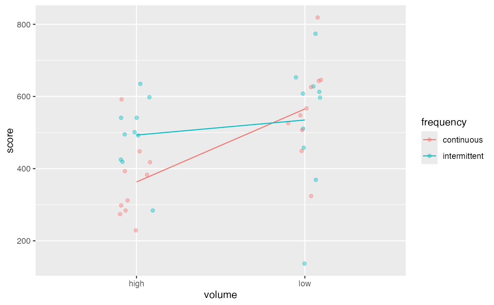
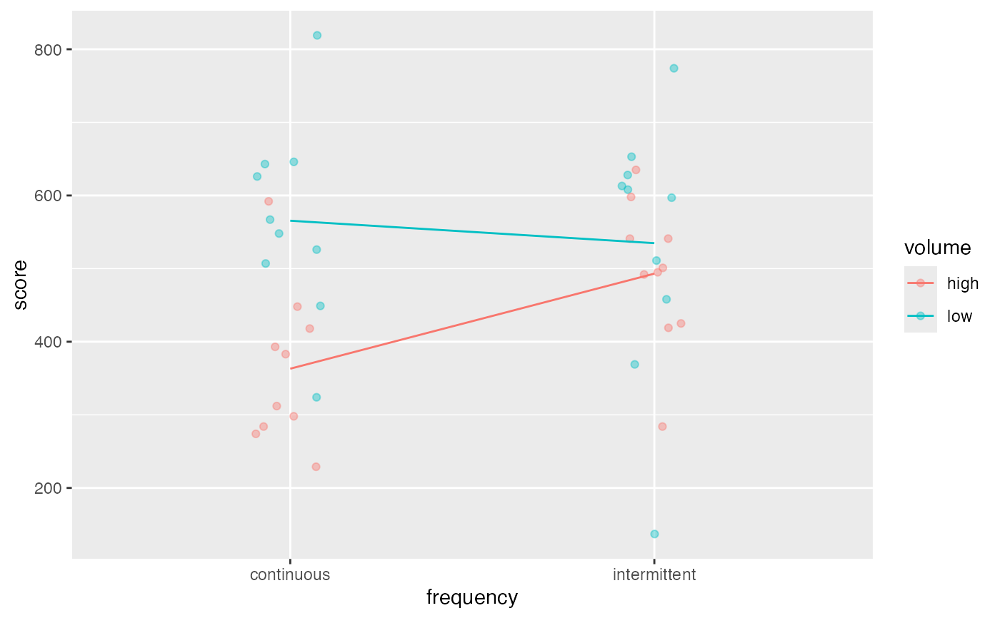

In order to test the effect of room noise, subjects were given a test under 5 different sets of conditions: 1) no noise, 2) intermittent low volume, 3) intermittent high volume, 4) continuous low volume, and 5) continuous high volume.
Format
A data frame with 50 observations on the following 5 variables.
id subject identifier
score score on the test
condition numeric code for condition
volume a factor with levels
highlownonefrequency a factor with levels
continuousintermittentnone
Examples
data(Noise)
#> Warning: data set ‘Noise’ not found
Noise2 <- Noise %>% filter(volume != 'none')
model <- lm(score ~ volume * frequency, data = Noise2)
anova(model)
#> Analysis of Variance Table
#>
#> Response: score
#> Df Sum Sq Mean Sq F value Pr(>F)
#> volume 1 148962 148962 8.4108 0.006322 **
#> frequency 1 24651 24651 1.3919 0.245827
#> volume:frequency 1 64561 64561 3.6453 0.064224 .
#> Residuals 36 637592 17711
#> ---
#> Signif. codes: 0 ‘***’ 0.001 ‘**’ 0.01 ‘*’ 0.05 ‘.’ 0.1 ‘ ’ 1
gf_jitter(score ~ volume, data = Noise2, color = ~ frequency,
alpha = 0.4, width = 0.1, height = 0) %>%
gf_line(score ~ volume, data = Noise2, group = ~frequency, color = ~ frequency,
stat = "summary")
#> No summary function supplied, defaulting to `mean_se()`

gf_jitter(score ~ frequency, data = Noise2, color = ~ volume,
alpha = 0.4, width = 0.1, height = 0) %>%
gf_line(score ~ frequency, data = Noise2, group = ~ volume, color = ~ volume,
stat = "summary")
#> No summary function supplied, defaulting to `mean_se()`
